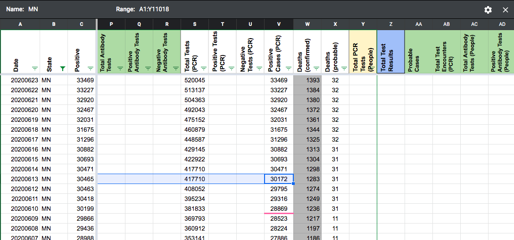
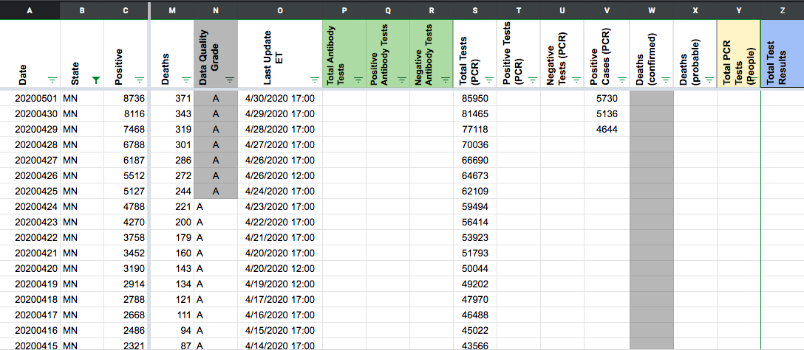

[MN] Historical Cases
Issue number 704
jesseandersonumd opened this issue on July 30, 2020 at 9:54 am
Labels Historical Data Backfill
State: MN
Issue in brief: Prior to 6/14, we reported separate values for positive cases (PCR) and positive cases (people, probable+confirmed) even though we currently treat the positive cases values that MN reports as lab-confirmed only. It is unclear whether we can simply copy over the values pre-6/14 located in the positive cases (people, probable+confirmed) to the positive cases (PCR) column so that they are identical. Currently, we only have positive cases (PCR) going back to 2020/04/29 in the States Daily sheet, while positive cases (people, confirmed + probable) goes back to 2020/03/06.
Image showing the change on 6/14: 
Image showing when we started reporting positive cases (PCR) values: 
This was a mistake in a backfill on 6/14…I updated Positives without also noticing I should also update Positive Cases (PCR).
Data in Positives pre-6/14 has been copied over to Positive Cases (PCR). If we ever need to restore the old values, they are in the original Positives column of the 6/14 [backfill analysis sheet](https://docs.google.com/spreadsheets/d/1Y0ZtCoyZHOf_p0X12msYe9oKI6L38UgnGZHN8JddOHU/edit#gid=1869230983.: